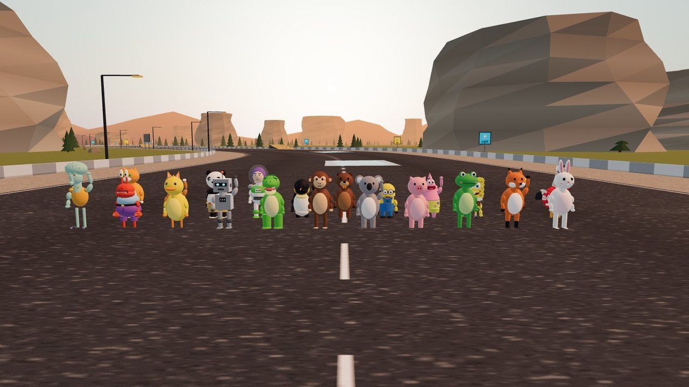

新车手
22 位动物和卡通明星车手
除了戴头盔的鹈鹕，现在还能选海绵宝宝、派大星、小黄人、蟹老板、章鱼哥、巴斯光年、功夫熊猫、帝企鹅、小霸王龙、猫头鹰、柯基、橘猫、兔子、狐狸、青蛙、小猪、考拉、猴子、机器人、小黄鸭。
- 主菜单里选择车手，比赛时对手阵容每场从角色库里随机挑，一场最多 11 辆车同场竞技
- 按参考图精心建模：海绵宝宝的三根睫毛和门牙、小黄人的双眼护目镜、蟹老板的长眼柄和大钳子、章鱼哥的大脑门……
- 每个角色都会转头看弯、双手握方向盘；下车走路时各有各的腿和脚（企鹅的蹼、恐龙的白爪、海绵宝宝的条纹袜）
- 看台上的观众也换成了全体角色随机混坐，发车时一起欢呼